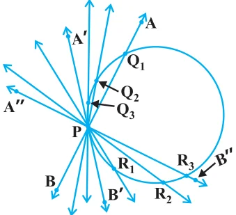
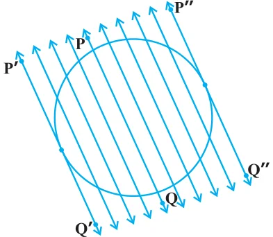
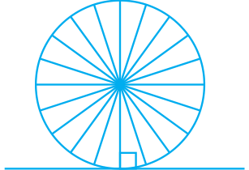
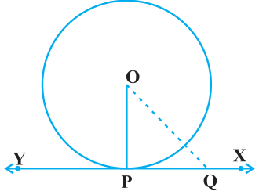

In the previous section, you have seen that a tangent* to a circle is a line that intersects the circle at only one point.
To understand the existence of the tangent to a circle at a point, let us perform the following activities:
Activity 1 : Take a circular wire and attach a straight wire AB at a point P of the circular wire so that it can rotate about the point P in a plane. Put the system on a table and gently rotate the wire AB about the point P to get different positions of the straight wire [see Fig. 10.3(i)].

In various positions, the wire intersects the circular wire at P and at another point \(\text{Q}_{1}\) or \(\text{Q}_{2}\) or \(\text{Q}_{3}\), etc. In one position, you will see that it will intersect the circle at the point P only (see position A′B′ of AB). This shows that a tangent exists at the point P of the circle. On rotating further, you can observe that in all other positions of AB, it will intersect the circle at P and at another point, say \(\text{R}_{1}\) or \(\text{R}_{2}\) or \(\text{R}_{3}\), etc. So, you can observe that there is only one tangent at a point of the circle.
While doing activity above, you must have observed that as the position AB moves towards the position A′B′, the common point, say \(\text{Q}_{1}\), of the line AB and the circle gradually comes nearer and nearer to the common point P. Ultimately, it coincides with the point P in the position A′B′ of A″B″. Again note, what happens if ‘AB’ is rotated rightwards about P? The common point \(\text{R}_{3}\) gradually comes nearer and nearer to P and ultimately coincides with P. So, what we see is:
The tangent to a circle is a special case of the secant, when the two end points of its corresponding chord coincide.

Activity 2 : On a paper, draw a circle and a secant PQ of the circle. Draw various lines parallel to the secant on both sides of it. You will find that after some steps, the length of the chord cut by the lines will gradually decrease, i.e., the two points of intersection of the line and the circle are coming closer and closer [see Fig. 10.3(ii)]. In one case, it becomes zero on one side of the secant and in another case, it becomes zero on the other side of the secant. See the positions P′Q′ and P″Q″ of the secant in Fig. 10.3 (ii). These are the tangents to the circle parallel to the given secant PQ. This also helps you to see that there cannot be more than two tangents parallel to a given secant.
This activity also establishes, what you must have observed, while doing Activity 1, namely, a tangent is the secant when both of the end points of the corresponding chord coincide.
The common point of the tangent and the circle is called the point of contact [the point A in Fig. 10.1 (iii)] and the tangent is said to touch the circle at the common point.

Now look around you. Have you seen a bicycle or a cart moving? Look at its wheels. All the spokes of a wheel are along its radii. Now note the position of the wheel with respect to its movement on the ground. Do you see any tangent anywhere? (See Fig. 10.4). In fact, the wheel moves along a line which is a tangent to the circle representing the wheel. Also, notice that in all positions, the radius through the point of contact with the ground appears to be at right angles to the tangent (see Fig. 10.4). We shall now prove this property of the tangent.
Theorem 10.1 : The tangent at any point of a circle is perpendicular to the radius through the point of contact.
Proof :
We are given a circle with centre O and a tangent XY to the circle at a point P. We need to prove that OP is perpendicular to XY.
Take a point Q on XY other than P and join OQ (see Fig. 10.5).

The point Q must lie outside the circle. (Why? Note that if Q lies inside the circle, XY will become a secant and not a tangent to the circle). Therefore, OQ is longer than the radius OP of the circle. That is,
\( \text{OQ} \gt \text{OP}. \)
Since this happens for every point on the line XY except the point P, OP is the shortest of all the distances of the point O to the points of XY. So OP is perpendicular to XY. (as shown in Theorem A1.7.)
Remarks
- 1.By theorem above, we can also conclude that at any point on a circle there can be one and only one tangent.
- 2.The line containing the radius through the point of contact is also sometimes called the ‘normal’ to the circle at the point.